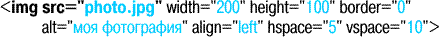

Браузеры поддерживают следующие графические форматы: GIF, JPEG, PNG и SVG.
Файлы иллюстраций обычно размещают в папке IMAGES, причем такие папки следует создать как в корне сайта (для общих иллюстраций), так и для каждого раздела.
Иллюстрация относится к inline элементам (разметка на уровне текста) и добавляется в код с помощью элемента IMG:  images.gif
Каждый пиксель иллюстрации соответствует пикселю монитора, поэтому при создании иллюстрации нужно указывать размеры в пикселях, а не в миллиметрах. Разрешение иллюстрации должно быть 72ppi (пикселей на дюйм). Объем файла зависит от размеров иллюстрации, , но суммарный объем иллюстраций не должен превышать 150-200 кб, иначе процесс загрузки страницы может затянуться надолго.
Полезные советы: 1. Нельзя масштабировать иллюстрацию, только задавая нужные размеры в теге IMG - пострадает качество и возрастет объем страницы. Воспользуйтесь Adobe PhotoShop для пересчета иллюстрации. 2. Если иллюстрация является ссылкой, то она отобразиться с бордюром. Чтобы его убрать, задайте в теге IMG атрибут BORDER="0". 3. Для размещения иллюстрации по центру поместите ее в блочный элемент, и уже для него задайте ALIGN="center". 4. Суммарный объем иллюстраций не должен превышать 150-200 кб, иначе процесс загрузки страницы может затянуться. 5. Ко всем значимым иллюстрациям добавляйте описание с помощью атрибута ALT - это значительно повысит информативность и usability (эргономику) сайта. 1. Формат JPEG
images/jpeg1.jpg Процесс сжатия по схеме JPEG состоит из нескольких шагов. На первом шаге производится преобразование изображения из цветового пространства RGB в пространство YUV, основанное на характеристиках яркости и цветности. Вся дальнейшая работа производится именно с этим цветовым пространством, которое благодаря некоторым своим характеристикам позволяет получать нам столь большие степени сжатия.
images/jpeg2.jpg На следующем после преобразования шаге изображение разделяется на квадратные участки размером 8х8 пикселей. После этого над каждым участком производится т.н. дискретное косинус-преобразование (ДКП). При этом выполняется анализ каждого блока, разложение его на составляющие цвета и подсчет частоты появления каждого цвета.
Анализируя частотную информацию о появлении цветов, удается избавиться от части информации уже в процессе квантования. При этом цвета в верхней части спектра исключаются, что практически не сказывается на зрительном восприятии образа. Также исключается часть яркостной информации. Грубо говоря, JPG просто отбрасывает от яркостной составляющей половину полезного сигнала, а от цветовой 3/4. Это, конечно, примерно, т.к. существуют градации и более сложные схемы сжатия.
Если говорить научным языком, то JPG использует для сохранения ряды Фурье и при больших степенях сжатия просто отбрасывает члены ряда высшего порядка. И каждый раз при воспроизведении изображения на экране компьютер производит синтез. Причем, достаточно ресурсоемкий и заметный на медленных компьютерах. Из этого следует одно замечание - если Вы сохранили какой-нибудь рисунок в формате JPG, то восстановить его обратно до последнего пикселя невозможно! Именно из-за этого формат называется "форматом с потерями", и именно поэтому не рекомендуется пересжимать JPG-изображения, т.к. они обязательно станут хуже.
Примеры файлов JPEG:
Файлы высокого качества: images/a-fine.jpg images/b-fine.jpg
Файлы низкого качества: images/a-bad.jpg images/b-bad.jpg 2. Формат GIF
Формат GIF был разработан в 1987 году (GIF87a) фирмой CompuServe для передачи растровых изображений по сетям. В 1989-м формат был модифицирован (GIF89a), были добавлены поддержка прозрачности и анимации. GIF использует LZW-компрессию, что позволяет неплохо сжимать файлы, в которых много однородных заливок (логотипы, надписи, схемы).
GIF позволяет записывать изображение "через строчку" (Interlaced), благодаря чему, имея только часть файла, можно увидеть изображение целиком, но с меньшим разрешением. Это достигается за счет записи, а затем подгрузки, сначала 1, 5, 10 и т.д. строчек пикселов и растягивания данных между ними, вторым проходом следуют 2, 6, 11 строчки, разрешение изображения в браузере увеличивается. Таким образом, задолго до окончания загрузки файла пользователь может понять, что внутри и решить, стоит ли ждать, когда файл поднимется весь.
В GIF’e можно назначить один или более цветов прозрачными, они станут невидимыми в браузерах и некоторых других программах. Прозрачность обеспечивается за счет дополнительного Alpha-канала, сохраняемого вместе с файлом. Кроме того файл GIF может содержать не одну, а несколько растровых картинок, которые браузеры могут подгружать одну за другой с указанной в файле частотой. Так достигается иллюзия движения (GIF-анимация).
Основное ограничение формата GIF состоит в том, что максимальное количество цветов - 256.
Примеры файлов GIF:
иллюстрация с малым количеством цветов: images/gif1.gif
иллюстрация с прозрачностью: images/gif2.gif
иллюстрация с анимацией: images/gif3.gif 3. Формат SVG SVG - Scalable Vector Graphic - масштабируемая векторная графика. Позволяет масштабировать без потери качества. images/nature.svg 4. Изображение в качестве ссылки metro1.jpg metro1-mini.jpg 5. Фоновые изображения
Иллюстрация может быть фоном. Для этого используется возможности стилей CSS: